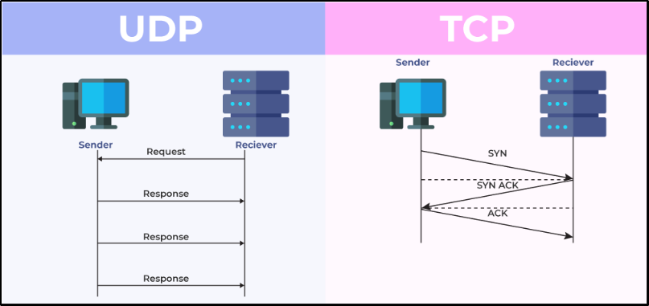

TCP (Transmission Control Protocol) is a communication protocol used on the internet and local networks to ensure reliable and ordered delivery of data between devices. Here's a simple explanation of how TCP works: 1. Establishing Connection: Before data can be exchanged, a connection must be established between the sender and receiver. This process involves a series of steps called the "TCP handshake," where both parties exchange control messages to agree on parameters for communication.
2. Reliable Transmission: Once the connection is established, data can be sent in the form of segments. TCP ensures reliability by numbering each segment and using acknowledgment messages. When the receiver receives a segment, it sends an acknowledgment back to the sender. If the sender doesn't receive an acknowledgment within a certain time frame, it retransmits the segment.
3. Ordered Delivery: TCP guarantees that data segments arrive at the receiver in the same order they were sent. Each segment contains a sequence number, allowing the receiver to reassemble the data in the correct order.
4. Flow Control: TCP prevents the sender from overwhelming the receiver with data by implementing flow control. The receiver specifies its buffer size, and the sender adjusts the rate of data transmission accordingly.
5. Connection Termination: When data exchange is complete, the connection is terminated gracefully. This involves another series of messages to ensure that both parties are ready to close the connection.
Overall, TCP provides a reliable, ordered, and error-checked connection between devices, making it suitable for applications where data integrity and sequence are crucial, such as web browsing, email, file transfer, and online gaming. UDP (User Datagram Protocol) is a communication protocol used for sending and receiving data over a network. Unlike TCP, UDP is connectionless and does not guarantee reliable delivery of data. Here's a simple explanation of how UDP works: 1. Connectionless Communication: UDP does not require a connection to be established before data can be sent. Instead, it allows applications to send data packets (datagrams) to a destination IP address and port without any prior setup.
2. Unreliable Delivery: Unlike TCP, UDP does not provide mechanisms for ensuring that data reaches its destination reliably. Once a datagram is sent, UDP does not track its delivery or retransmit lost packets. This makes UDP faster and more lightweight than TCP but also less reliable.
3. No Ordering Guarantee: UDP does not guarantee that datagrams will arrive at the destination in the same order they were sent. Each datagram is treated independently, and the order of delivery may vary.
4. Low Overhead: Because UDP does not include the overhead associated with establishing and maintaining connections or ensuring reliable delivery, it is often used for applications where speed and efficiency are more important than data integrity, such as real-time audio and video streaming, online gaming, DNS (Domain Name System) resolution, and network management protocols.
5. Minimal Protocol Features: UDP provides only basic functionality for sending and receiving datagrams. It does not include features like flow control, error correction, or congestion control, which are handled by higher-layer protocols or implemented in the application itself.
In summary, UDP offers a simple and lightweight communication mechanism suitable for applications where speed and efficiency are prioritized over guaranteed delivery and data integrity. However, it may not be suitable for applications where reliability and ordered delivery are essential.
The 3-way handshake is a process used by the TCP (Transmission Control Protocol) to establish a connection between two devices over a network. Here's a simple explanation of how the 3-way handshake works: 1. SYN (Synchronize):
- The client sends a SYN packet to the server to initiate the connection request. The SYN packet contains a sequence number that identifies the initial sequence of data the client expects to receive from the server.
- The client also chooses an initial sequence number for its own data, which is included in the SYN packet.
2. SYN-ACK (Synchronize-Acknowledge):
- Upon receiving the SYN packet, the server responds with a SYN-ACK packet. This packet acknowledges the client's SYN packet and includes its own SYN packet.
- The server also assigns its own initial sequence number for data it expects to receive from the client, which is included in the SYN-ACK packet.
3. ACK (Acknowledge):
- Finally, the client responds to the server's SYN-ACK packet with an ACK packet. This packet acknowledges the server's SYN packet.
- At this point, the connection is established, and both the client and server can start sending data to each other using TCP segments.
In summary, the 3-way handshake allows both the client and server to agree on initial sequence numbers and establish a reliable connection before data transmission begins. This process helps ensure that data is exchanged accurately and in the correct order, minimizing the risk of errors or packet loss during communication.

* On Linux Kali > Open Terminal > wireshark& >>>>>> You can see the Network Traffic here.
## Common Ports And Protocols
TCP
1. FTP (21): FTP (File Transfer Protocol) is a standard network protocol used to transfer files between a client and a server on a computer network. It operates over TCP/IP and allows users to upload, download, and manage files on a remote server securely. 2. SSH (22): SSH (Secure Shell) is a cryptographic network protocol used for secure communication between two computers. It provides encrypted connections and authentication mechanisms, allowing users to securely access and control remote machines over an unsecured network. 3. Telnet (23): Telnet is a network protocol that provides a command-line interface for remote access to another computer. It enables users to log in to a remote system and execute commands as if they were directly connected to the system's console. However, Telnet is insecure as it transmits data, including passwords, in plaintext. 4. SMTP (25): SMTP (Simple Mail Transfer Protocol) is a protocol used for sending email messages between servers. It defines the rules and format for transferring email messages from the sender's email client to the recipient's email server. 5. DNS (53): DNS (Domain Name System) is a hierarchical decentralized naming system for computers, services, or other resources connected to the Internet or a private network. It translates domain names into IP addresses, enabling users to access websites and other resources using human-readable names. 6. HTTP (80)/HTTPS (443): HTTP (Hypertext Transfer Protocol) and HTTPS (HTTP Secure) are protocols used for transferring hypertext requests and responses between clients and servers over a network. HTTP operates over port 80, while HTTPS, which adds encryption using SSL/TLS, operates over port 443. 7. POP3 (110): POP3 (Post Office Protocol version 3) is a protocol used by email clients to retrieve email messages from a mail server. It allows users to download emails to their local device for offline access and storage. 8. SMB (139+445): SMB (Server Message Block) is a network protocol used for file sharing, printer services, and interprocess communication (IPC) between computers on a network, particularly in Windows-based environments. It operates over ports 139 and 445 and is commonly used in Windows environments for file and printer sharing. 9. IMAP (143): IMAP (Internet Message Access Protocol) is a protocol used by email clients to retrieve and manage email messages stored on a mail server. Unlike POP3, IMAP allows users to organize emails into folders on the server and synchronize email across multiple devices.
UDP
1. DNS (53): DNS (Domain Name System) is a hierarchical decentralized naming system for computers, services, or other resources connected to the Internet or a private network. It translates domain names into IP addresses, enabling users to access websites and other resources using human-readable names. DNS operates over port 53 and uses both TCP and UDP protocols for communication. 2. DHCP (67, 68): DHCP (Dynamic Host Configuration Protocol) is a network management protocol used to automatically assign IP addresses and other network configuration settings to devices on a network. It operates over UDP and uses port 67 for DHCP server communication and port 68 for DHCP client communication. DHCP simplifies the administration of IP addresses and reduces the need for manual configuration. 3. TFTP (69): TFTP (Trivial File Transfer Protocol) is a simple file transfer protocol used for transferring files between a client and a server on a local network. It operates over UDP and uses port 69. TFTP is less complex than FTP and lacks authentication and security features, making it suitable for lightweight file transfer tasks, such as firmware updates and configuration file transfers. 4. SNMP (161): SNMP (Simple Network Management Protocol) is an Internet-standard protocol used for monitoring and managing network devices, such as routers, switches, servers, and printers. It operates over UDP and uses port 161 for communication between SNMP managers (clients) and SNMP agents (devices). SNMP allows network administrators to gather information about network devices, monitor performance, and configure devices remotely.